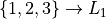
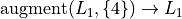
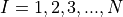
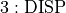

Simulation#
```{epigraph} Your mind makes it real.
In this project, a program is created on a TI-83/84/85 calculator that simulates flipping a fixed amount of coins. The user will be able to adjust the probability of a getting heads or tails, in order to simulate fair and unfair conditions. The simulation will be performed a prescribed amount of times. These three values will be the parameters of the simulation,
n: Number of coins flips
p: Probability of a single successful coin flip
m: Number of simulations
“Successful” is here defined to mean “getting an outcome of heads”.
The output of the program will be a sampling distribution for the number of heads obtained when flipping a coin n times. The sampling distribution will have m data points.
Instructions#
Read through the Background section.
Read through the calculator_project_two_project section. As you read through this section, follow along on your own calculator.
Read through the Analysis. As you read through, complete the questions in the Analysis section in a document. When you completed the Analysis section, upload the document to the Google Classroom assignment.
On the due date, bring your calculator to class and connect to the ViewSonic. Use the TIConnect software to export your simulation for grading.
Background#
Augment#
AUGMENT is a list operation that takes a list as input and produces a new list as output. Execute the command,

In other words, store the list :math:{ 1, 2, 3 `} in :math:`L_1.
That’s a nice list and all, but it needs more…list! So, let’s say, you want to add 4 to the end of this list. In order to do this on your calculator without creating an entirely new list, you have to use AUGMENT.
Execute the following command,

With AUGMENT, we have told our calculators to take the current list stored in :math:L_1, merge it with the list :math:{ 4 } and then store the result back in :math:L_1 This will be useful in what follows! This function will be integral in the simulation created in this project.
TI Basic#
In a previous project, we introduced TI Basic and used it to write a relatively simple program for our *TI-84*s to calculate the Correlation of two variables.
Control Structures#
A control structure is a programmatic construct for controlling the logical flow of a program. This project will require the use of two fundamental control structures: FOR loops and IF-THEN statements.
Note
IF-THEN statements are often called “conditional statements”
For Loop#
A FOR loop is a programmatic construct for repeating a block of instructions; The body of the FOR loop is the block of repeating instructions. The arguments provided to a FOR loop determine how many times the block of instructions execute.
Whenever a control structure is started, it must always be accompanied with a corresponding END statement.
Once a FOR has been inserted into a program and closed with an END, it must be supplied with appropriate arguments. A FOR has four arguments,
FOR(<INDEX>, <START>, <END>, <STEP>)
Important
The name of each argument is written between angle brackets, <>, but the angle brackets are not part of the syntax. See below for an example.
INDEXassigns a variable to be used as the index of the loop.STARTsets the starting value for the index.ENDsets the ending value for the index.STEPsets the increment added to the index at the end of the loop.
As an example, the following code block will prompt the user to enter a value for N. Then it use the index I to iterate from  in steps of 1. For each value of I, it will print that value to screen,
: INPUT "ITERATIONS: ", N
: FOR(I, 1, N, 1)
: DISP I
: END
Note
Recall the DISP function can be found from the PRGM editor,

Note
Recall the INPUT function can be found from the PRGM editor,
Conditional Statement#
A conditional statement provides a way of gating certain blocks of code behind a logical condition. Consider the instructions,
If it rains, take an umbrella. Otherwise, pack a lunch.
The condition of this proposition is the actual event of rain. If it is raining, then the condition has been met and the operation of taking an umbrella is performed. In the event it does not rain, the operation of taking an umbrella is replaced with the operation of packing a lunch.
An IF-THEN-ELSE idiom provides exactly this sort of control structure for programs on TI calculators. If a condition is met, a certain operation is performed while if the condition is not met, a different operation is performed.
Important
The ELSE command is optional. Every conditional statement needs an IF and a THEN, but the inclusion of ELSE is not necessary.
The following code block will generate a random number between 0 and 1. If the number is greater than 0.5, it will print YAHTZEE to screen; otherwise, it will print WHOMP WHOMP.
: RAND -> A
: IF A>0.5
: THEN
: DISP "YAHTZEE"
: ELSE
: DISP "WHOMP WHOMP"
: END
Graphing#
TODO
Analysis#
Logical Structure#
TODO
TODO
TODO
Simulation#
TODO
TODO
TODO
Sampling Distributions#
TODO
TODO
TODO
TODO
TODO